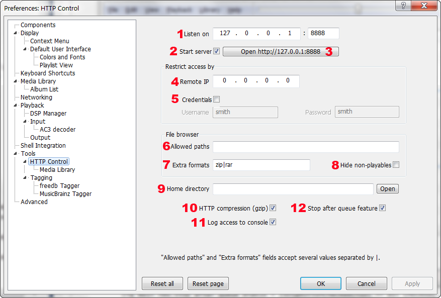

foo_httpcontrol 0.97.12 14 Aug 2011
http://code.google.com/p/foo-httpcontrol
Warning/disclaimer: this software comes without any warranties at all. It is still in the very early development stage, and so on, and so forth, blah-blah-blah.
Component can be very dangerous to your music collection when blindly exposed to Internet without any additional protection. Remember, it is intended for private, non-public use only!
This foobar2000 1.0 component is developed as replacement for Media Player Classic web control interface,
which I used quite a lot, but still didn't like it, as it missed quite a number of features I'd like to have. Also
I felt it's a shame such great player as foobar2000 couldn't be remotely controlled over http nowadays.
So, erm, I went ahead and somehow developed component featuring functions I use by myself on everyday basis.
It provides the following features via http requests:
- full control of playback, including seekbar
- basic playlist support
- basic playback queue support
- basic media library support
- basic file browser functions, including ability to browse Microsoft Network
- a few UI customization abilities
Default interface template is written using synchronious document model (with basic CSS and JS),
and has been tested and proved itself working on any modern browser: Opera, Firefox, Chrome, Safari.
Installation
Extract foo_httpcontrol.dll to foobar2000 components directory (%APPDATA%\foobar2000\user-components\foo_httpcontrol\).
Alternatively you can use foobar2000 own installer: foobar2000/Preferences/Components/Install... and point it to foo_httpcontrol zip archive.
Download at least one template (http://www.hydrogenaudio.org/forums/index.php?showtopic=62218, http://code.google.com/p/foo-httpcontrol)
and follow bundled instructions to install it where it belongs.
Start foobar2000 and modify component settings according to your taste in
preferences (foobar2000/Preferences/Tools/HTTP Control). Nothing prevents you from
customizing any template you are using, or even writing your very own one.
Default configuration allows you to access foo_httpcontrol at least on
http://127.0.0.1:8888/ address.
Well, that's all, try to have fun! Just in case: I'm preventively sorry for all possible frustration.
Preferences

- Specifies the IP address and port used for listening to incoming connections. Both IP address and port must be valid, make sure specified port is not used by another program.
- Check or uncheck to enable or disable listening for incoming connections.
- Opens component page in default browser. Button is inactive if server/listener isn't started.
- Limit access to component by setting the allowed IP address. Connections initiated from other addresses will be discarded. Setting this to 0.0.0.0 allows all connections.
- Limit access to component by defining a login/password pair. Untick to disable passwords.
- Built-in file browser can be limited to certain paths of your file system. It is useful to simplify the browsing process or hide your secret files from prying eyes. For example, setting Allowed paths to d:\music|c:\temp\music|e:\ permits browsing only in these three file system branches.
- You can specify additional file extensions to be treated as playable files by built-in file browser. It is required for opening archives containing playable files.
- Removes all files which foobar2000 core considers unplayable from built-in file browser.
- Specifies path where component will look for template files. Pressing Open opens specified or default directory in Explorer. If not sure, leave it blank.
- Enables gzip compression of component output. Enabling it is usually harmless and quite beneficial as component generates a lot of text which is very compressible. Disable if you are using some funky browser and having unexpected problems.
- Enables logging of component access data to foobar2000 console. Useful for debugging etc.
- Adds "Stop after queue" item in Playback menu. It works exactly as it's named, stops playback when end of playback queue is reached.
Don't forget to press Apply or your changes won't have any effect until fb2k is restarted.
Troubleshooting
Discussion thread (please post all your questions and suggestions here):
http://www.hydrogenaudio.org/forums/index.php?showtopic=62218
Changes history 2011
v0.97.12 14 Aug
- add: hide password text in Preferences;
- fix: http protocol items left out when adding items using Browse cmd. it's now possible to "Add location" too by specifying url in Browse cmd param1;
v0.97.11 20 Jul
- fix: crash on unknown file format requests;
- fix: inability to send zero length files;
v0.97.9 04 Jul
- fix: FormatTitles command results are now proper for now playing context;
v0.97.8 14 May
- add: removed deprecated commands VolumeUp, VolumeDown, DequeueTrack;
- add: FormatTitles cmd, parses the list of titleformatting strings passed in param1 (multiple values must be separated by |)
for active playlist item defined in param2 or currently played item if param2 is omitted, and returns the data in json array format.
make sure to pass reference to any filename with json extension in param3, so response has proper the content type.
if param3 is omitted, content type is set to default text/html and might confuse some browsers.
for example, calling
?cmd=FormatTitles¶m1=%artist%|%album%|%bitrate%¶m2=0¶m3=format.json
formats supplied titleformatting strings for active playlist item number 0, resulting in following response:
["Ozric Tentacles","Spirals in Hyperspace","980"]
- add: ability to ignore files with specific extensions in file browser: see "Ignored formats" preferences field;
v0.97.7 7 Mar
- add: albumart_limit_size config key, defines maximum albumart size in bytes to retrieve. default is 0, no limit;
- add: albumart_prefer_embedded config key, defines whether to prefer embedded albumart over external. default is 0, prefer external albumart;
- add: Sort command, sorts whole active playlist or item list specified in param2, using sort pattern param1;
- fix: setting playlist_items_per_page config key to 0 disables playlist retrieve;
- fix: SelectionCommand additionally accepts list of items to be processed in param2;
v0.97.6 24 Jan
- add: additional exception detection;
- add: removed stripping non-text chars in json responses as most of the 3rd party templates requests have cr/lf's in wrong places;
v0.97.5 22 Jan
- fix: possible crash during media library query;
- add: strip non-text chars in json responses;
Changes history 2010
v0.97.4 21 Dec
- add: SetSelection command, selects item list specified in param1 (numbers separated by any delitemeter),
optionally taking param2 as playlist number. empty param1 value removes all selection, if param1 equals to ~, all playlist items will be selected.
example: ?cmd=SetSelection¶m1=1,2,3¶m2=1 selects items 1,2,3 in playlist 1
- add: SelectionCommand command, executes context menu command specified in param1 for currently selected items (don't forget to urlencode param1 value). Note that running playlist-specific context menu commands like Remove, Crop, etc is not possible.
example: ?cmd=SelectionCommand¶m1=Playback%20Statistics%2FRating%2F3 sets rating 3 to active playlist selection.
- fix: context menu commands are run on full context menu;
- fix: removed 'allow fb2k command-line interface' option;
v0.97.3 15 Nov
- add: PlayingCommand command, executes context menu command specified in param1 for currently playing item (don't forget to urlencode param1 value).
example: ?cmd=PlayingCommand¶m1=Playback%20Statistics%2FRating%2F3
- fix: Decapitalize stop after queue menu item;
v0.97.2 31 Oct
- fix: CmdLine command doesn't work in fb2k 1.1 and newer;
- fix: disabling command-line interface in preferences has no effect;
v0.97 24 Sep
- fix: removed forgotten console debug message;
v0.96.16 23 Sep
- add: pseudo-multithreaded request processing to workaround the new dubious pre- and post- 'speedup' connections of Chrome 7 and IE9;
v0.96.15 13 Sep
- add: \r\n characters escaping in *_JS macros;
- fix: wrong compile optimization options;
v0.96.14 08 Aug
- fix: possible buffer overrun in file browser;
- add: updated documentation;
v0.96.13.1 04 May
- fix: borked content-type in server responses;
v0.96.13 03 May
- fix: installed templates list shown before user authentification;
- fix: removed display of home folder full path in templates list and error pages;
- add: autoselect playlist if only one playlist present;
- add: SeekDelta command, param1 specifies seek delta seconds (signed integer);
- add: VolumeDBDelta command, param1 specifies dB volume level delta defined by signed integer multiplied by 10 (divided by 10 within the component);
- add: VolumeDelta command, param1 specifies signed volume delta percentage;
- add: VolumeUp VolumeDown commands are deprecated;
v0.96.12.1 19 Apr
- fix: stop after queue affected playlist refreshing on queue operations;
v0.96.12 17 Apr
- add: optional gzip compression (reduces compressible html/css/json traffic 3-5 times). disable in preferences if you're experiencing problems.
- add: user specified playable file extensions for file browser. helps to make archives appear playable, for example.
- fix: random stuff;
v0.96.11 10 Apr
- fix: more accurate replication of DUI behaviour for Start/Pause commands;
v0.96.10 04 Apr
- fix: crashes on queue operations;
v0.96.9 30 Mar
- fix: added backslash 'escaping' in certain ui macros;
v0.96.8 22 Mar
- fix: crash in certain conditions;
v0.96.7 21 Mar
- fix: wrong handling of multivalue tags in media library query
- fix: some fixes and improvements
v0.96.6 15 Mar
- fix: wrong parent in network shares browser
- fix: some bugs here and there
v0.96.5 22 Feb
- add: VolumeMuteToggle command
- add: VolumeDB command, param1 specifies positive integer dB volume level multiplied by 10 (divided by -10 within the component). accepted value range is 0...665 (0...-66.5 dB), or 1000 for mute (-100 dB)
- add: [VOLUME_DB] integer db volume level (multiplied by -10, thus single digit precision)
- fix: custom random play command replaced with foobar2000 standard one
v0.96.4 23 Jan
- fix: fixes and improvements
- add: FocusOnPlaying command
v0.96.3 06 Jan
- add: [HELPER1X], [HELPER2X], [HELPER3X] macros - xml friendly versions of [HELPERN] macros
v0.96.2 05 Jan
- fix: manual starting/stopping listener thread issues
- fix: wrong [ALBUMART] macro url for embedded albumart
- add: SAQ command ignored when "Enable stop after queue menu item" preferences option unchecked
Changes history 2009
v0.96.1 29 Dec
- add: [PLAYLIST_IS_UNDO_AVAILABLE] [PLAYLIST_IS_REDO_AVAILABLE] active playlist context macros
- add: Redo cmd, reverting changes made by undo, param1 optionally specifies playlist
- add: creating undo point prior to enqueue tracks and library query commands
- add: removable stop after queue menu item
- add: templates config file. see default template config file for syntax
- add: fb2k 1.0+ is required
- fix: various fixes
Appendix #1
Bundled foobar2000 icon (c) 2007 Florian Trendelenburg
foo_httpcontrol is developed using:
- foobar2000 1.0 SDK
Copyright (c) 2001-2009, Peter Pawlowski
All rights reserved.
http://foobar2000.org
- JNetLib
Justin Frankel http://www.cockos.com
Joshua Teitelbaum http://www.cryptomail.org
- zlib
http://www.zlib.net/
Copyright (C) 1995-2010 Jean-loup Gailly and Mark Adler
- priceless inspiration of foo_httpserver sources
Erik http://foobar.daychanged.com
Jonatan Kronqvist http://fb2k.oxygenite.org
- remains of my mental and physical health
Appendix #2
Command syntax:
http://>ip<[:<port>]/<?cmd=Command[¶m1=param 1[¶m2=param 2]][¶m3=param 3]>
Supported commands:
- Stop playback
cmd=Stop
- Play or pause playback
cmd=PlayOrPause
- Start playback in active playlist
cmd=Start
param1=playlist item starting from 0
- Start playback of random item in active playlist
cmd=StartRandom
- Start playback of previous item in active playlist
cmd=StartPrevious
- Start playback of next item in active playlist
cmd=StartNext
- Volume level
cmd=Volume
param1=volume level, 0...100 (%)
- Volume level delta
cmd=VolumeDelta
param1=signed volume level delta percentage, -N...N (%)
- Volume level dB
cmd=VolumeDB
param1=volume level, 0...665 (0...-66.5 db), or 1000 to mute
- Volume level dB delta
cmd=VolumeDBDelta
param1=signed delta, -N...N (-N/10...N/10 db)
- Seek playing item by percentage
cmd=Seek
param1=position, from 0 to 100 (percent)
- Seek playing item by delta seconds
cmd=SeekDelta
param1=seconds (signed integer)
- Empty active playlist
cmd=EmptyPlaylist
- Change playback order
cmd=PlaybackOrder
param1=order number, from 0 to 7
- Delete one or more playlist items
cmd=Del
param1=numbers separated by any delitemeter
param2=optionally specifies playlist
- Undo changes made to playlist backed up by restore point
cmd=Undo
param1=optionally specifies playlist
- Move one or more active playlist items
cmd=Move
param1=numbers separated by any delitemeter
param2=signed move delta
- Set playlist selection
cmd=SetSelection
param1=numbers separated by any delitemeter, empty to remove selection, ~ to select all
param2=optionally specifies playlist
- Change stop after current flag
cmd=SAC
param1=0 or 1
- Switch playlist
cmd=SwitchPlaylist
param1=playlist index, from 0
- Switch playlist page
cmd=SwitchPlaylistPage;P
param1=page index, from 0
- Set focus to specific item of active playlist
cmd=SetFocus
param1=item starting from 0
- Browse directory
cmd=Browse
param1=urlencoded path
- Enqueue path
param2=EnqueueDir
- Enqueue path including subdirectories
param2=EnqueueDirSubdirs
- Put active playlist items to playback queue
cmd=QueueItems
param1=numbers separated by any delitemeter
- Remove active playlist items from playback queue
cmd=DequeueItems
param1=numbers separated by any delitemeter
- Search media library
cmd=SearchMediaLibrary;Search
param1=search query
- Query media library
cmd=QueryAdvance
param1=search query
- Query media library
cmd=QueryRetrace
- Skip generating request response
param3=NoResponse
- Use different template file
param3=template.html
- PlaylistItemsPerPage
param1=number of playlist items per page, limited to 16384
- QueueAlbum
param1=item album search starts from (focused item is used if param1 is omitted)
- QueueRandomItems
param1=item count
- FlushQueue
- Parse
param1=string to parse and return
- RemovePlaylist
param1=playlist index
- CreatePlaylist
param1=playlist name
param2=insertion point index
- RenamePlaylist
param1=playlist name
param2=playlist index
- FocusOnPlaying
- Update helper macros
cmd=RefreshPlayingInfo
- Execute foobar2000 with specific command-line parameters
cmd=CmdLine
param1=parameters
- Executes context menu command specified in param1 for currently playing item
cmd=PlayingCommand
param1=case sensitive context menu path, for example: Playback Statistics/Rating/3
don't forget to urlencode param1 value.
- Executes context menu command specified in param1 for currently selected (or specified list of) items of active playlist. Note that running playlist-specific commands like Remove, Crop, etc is not possible.
cmd=SelectionCommand
param1=case sensitive context menu path, for example: Playback Statistics/Rating/3
param2=numbers separated by any delimeter (optional)
don't forget to urlencode param1 value.
- Sorts active playlist or its specified items using sort pattern
cmd=Sort
param1=sort pattern
param2=numbers separated by any delimeter (optional)
don't forget to urlencode param1 value.
- Tileformats a list of titleformatting string using playing or certain active playlist item and returns result as json array
cmd=FormatTitles
param1=list of titleformatting strings (separated by |)
param2=active playlist item index (optional)
param3=file name to guess the resulting content type from, use file.json
Appendix #3
Template macro substitutions:
- [HELPER1]
- [HELPER2]
- [HELPER3]
- [HELPER1X]
- [HELPER2X]
- [HELPER3X]
- [VOLUME]
- [VOLUME_DB]
- [VOLUME_OPTION]
- [PLAYBACK_ORDER]
- [PLAYBACK_ORDER_OPTION]
- [PLAYLISTS_OPTION]
- [SAC]
- [SAQ]
- [ITEM_PLAYING_POS]
- [ITEM_PLAYING_LEN]
- [QUEUE_TOTAL_TIME]
- [IS_PLAYING]
- [IS_PAUSED]
- [IS_ENQUEUEING]
- [AUTO_REFRESH]
- [LAST_ACTION]
- [ALBUMART]
- [PLAYLIST]
- [PLAYLIST_TOTAL_TIME]
- [PLAYLIST_ACTIVE]
- [PLAYLIST_PLAYING]
- [PLAYLIST_PAGE]
- [PLAYLIST_PAGES_COUNT]
- [PLAYLIST_PAGES]
- [PLAYLIST_PAGES_SELECT]
- [PLAYLIST_ITEM_FOCUSED]
- [PLAYLIST_ITEM_PLAYING]
- [PLAYLIST_ITEM_PREV_PLAYED]
- [PLAYLIST_ITEMS_COUNT]
- [PLAYLIST_ITEMS_PER_PAGE]
- [PLAYLIST_PLAYING_ITEMS_COUNT]
- [PLAYLIST_IS_UNDO_AVAILABLE]
- [PLAYLIST_IS_REDO_AVAILABLE]
- [PLAYLIST_JS]
- [PLAYLISTS_JS]
- [SEARCH_REQUEST]
- [QUERY]
- [QUERY_JS]
- [QUERY_INFO]
- [QUERY_INFO_JS]
- [PATH]
- [PATH_JS]
- [PATH_PARENT]
- [BROWSER]
- [BROWSER_JS]
- [STATE_CHANGE]
Appendix 4
Sample template config file. Config file should be named config and put to template directory root.
; default template configuration file
;
[foo_httpcontrol]
; base url of template. for example, if template is invoked as http://ip:port/template/, put / here.
url=/
; defines formatting of a playlist row using foobar2000 titleformatting.
playlist_row=<td>%album artist% - %album% - %tracknumber% - %title% - %length%
; defines formatting of a helper macros using foobar2000 titleformatting.
helper1=%album artist% - %title%
helper2=[%title% - ]
helper3=%codec% %bitrate%kbps %samplerate%Hz %channels%
; specifies wildcards where we should look for albumart files, separated by |. foobar2000 titleformatting is available there as well.
albumart=$directory_path(%path%)\folder.jpg|$directory_path(%path%)\*.jpg
; specifies path of a picture to show when albumart is not found.
albumart_not_found=default/nocover.jpg
; specifies path of a picture to show when albumart is requested but not currently available (no playing track).
albumart_not_available=default/nocover.jpg
; limits maximum albumart size to download, in bytes. default is 0 - no limit.
albumart_limit_size=0
; setting to 1 favors embedded albumart over external. default is 0.
albumart_prefer_embedded=0
; controls size of a playlist 'page'. setting to 0 completely disables playlist generation. default is 30.
playlist_items_per_page=30